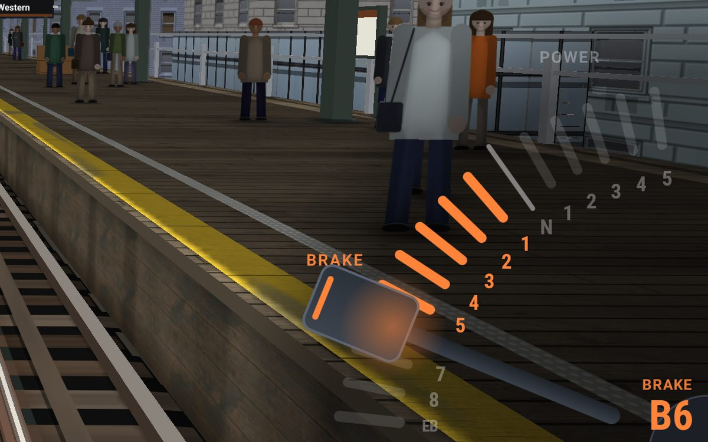
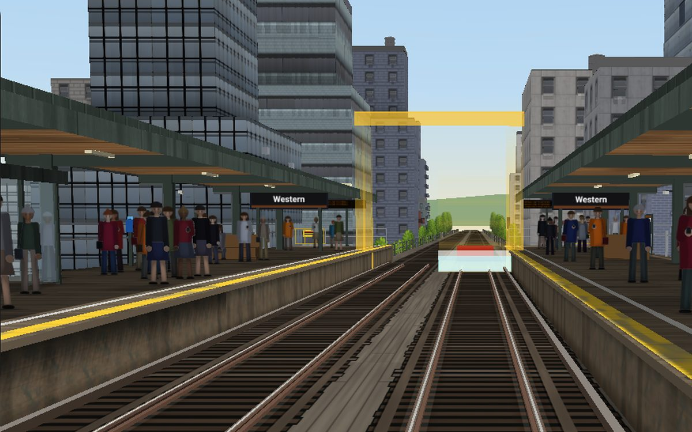
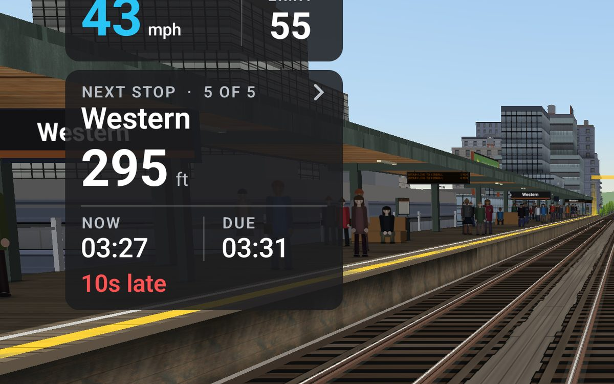
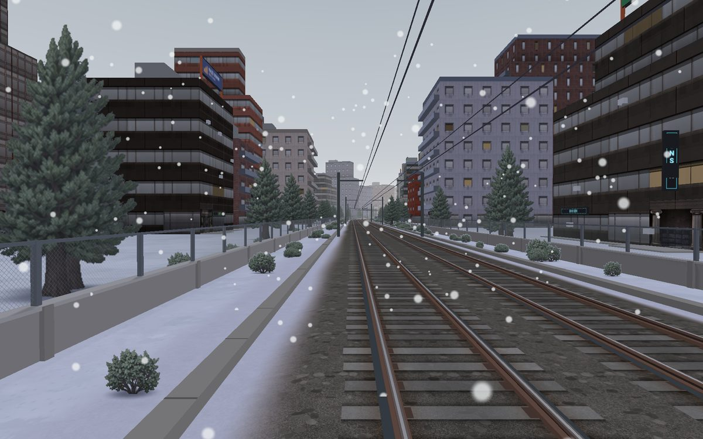
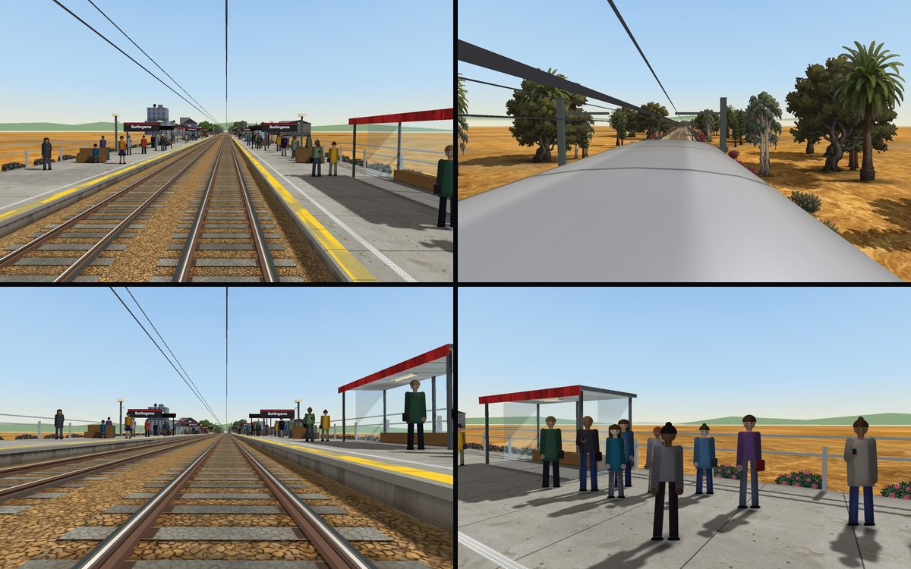
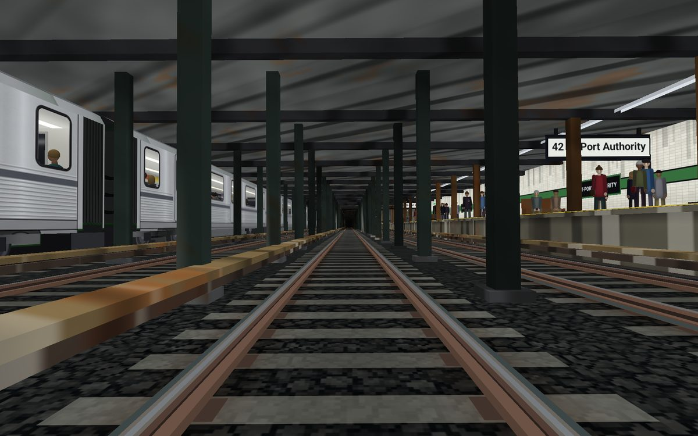
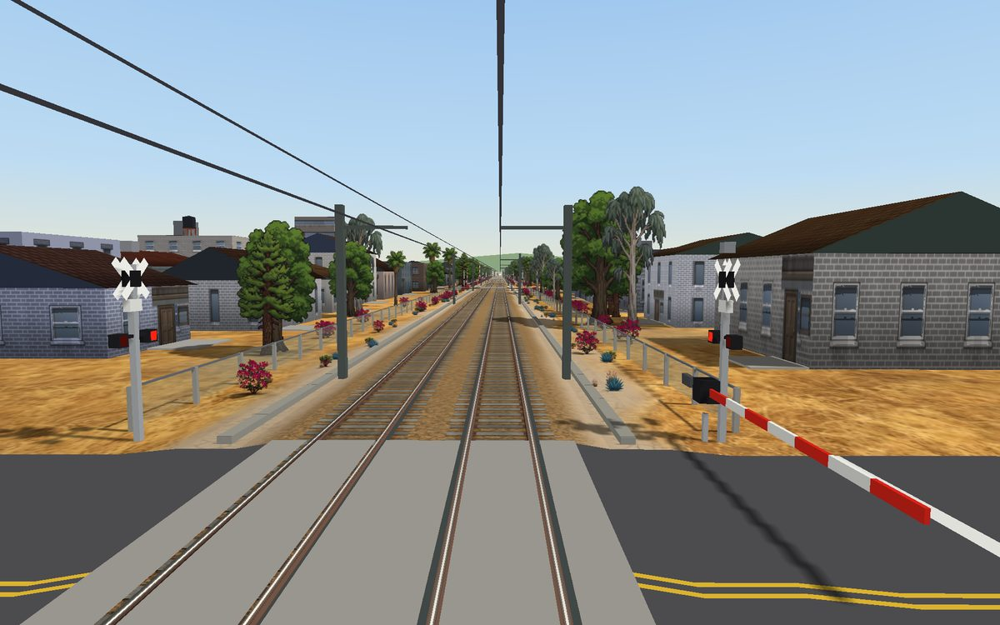
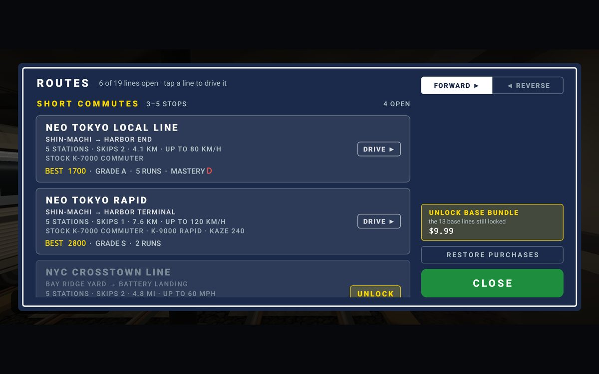
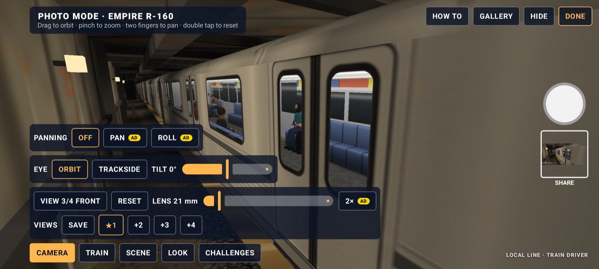
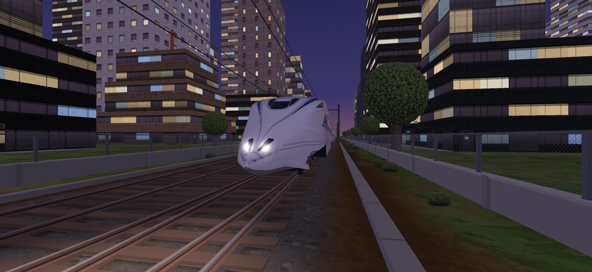

Trailer, 1:33. Watch it on YouTube.
Local Line puts you in the cab of a commuter train, a subway, an elevated line or an express, and hands you the master controller. Ease out of the platform, hold the line speed through the curves, keep to the timetable, and bring every car to a stop right on the mark while the passengers wait on the platform. It looks easy. It is not easy.

A real master controller
Power and brake notches on a dial, not a gas pedal. Trains have weight: plan your braking a station ahead.

Stop on the mark
Every stop is graded. Land a PINPOINT or a BULLSEYE for a precision bonus; overshoot and the doors stay shut.

Keep the timetable
A run clock tells you if you are LATE or EARLY at each station. Speed limits are enforced, and the train protection will step in if you ignore them.

Day, night and weather
Morning light, rain on the glass, snow on the platforms, fog and storms. The weather changes every run.

Every view
From the cab, the chase cam, the rail or the window. Watch a replay of your stop from the platform end.

Under the city
Express tracks, crossovers and tunnels on the subway, elevated junctions round the Loop, and a viaduct across Bogotá.

Gates down, bells ringing
Level crossings all the way down the Peninsula, and the main line flat out at up to 160 mph.

Unlock new lines
Master a line to unlock the next. A daily run, a logbook of every trip, streaks, ranks and world leaderboards for every line.
Nineteen lines, six cities
Short commuter hops to learn on, long endurance runs to master, and express lines where the stations come fast. Master a line to unlock the next.
| City | Lines |
|---|---|
| New York | Subway Eighth Avenue Line, Eighth Avenue Express, Crosstown Line |
| Chicago | Elevated Brown Line with the Loop, Lakeview and Ravenswood; Red Line North |
| The Peninsula | Commuter Peninsula Line and Peninsula Express, with grade crossings all the way |
| Northeast Corridor | High speed North and South, at full main-line speed |
| Bogotá | Metro Line 1 on the viaduct, with Caracas, Kennedy and Puente Aranda |
| Neo Tokyo | Fictional Local Line, Rapid and Express |
Each line has its own train, from a subway car and an elevated car to a double-deck commuter set, a high-speed set and bullet trains, each with its own sound.

Stop the world. Take the picture.
Pause anywhere and walk round your train with a free camera. Pick the lens, set the time of day and the weather, add a passing train, blur the background, and save it to your phone.



Free to play
Local Line is free, with ads. A one-time purchase removes them, and locked lines can be earned by driving or bought outright. No subscriptions, no energy timers.
Played in English, Spanish, German, Brazilian Portuguese and Simplified Chinese.